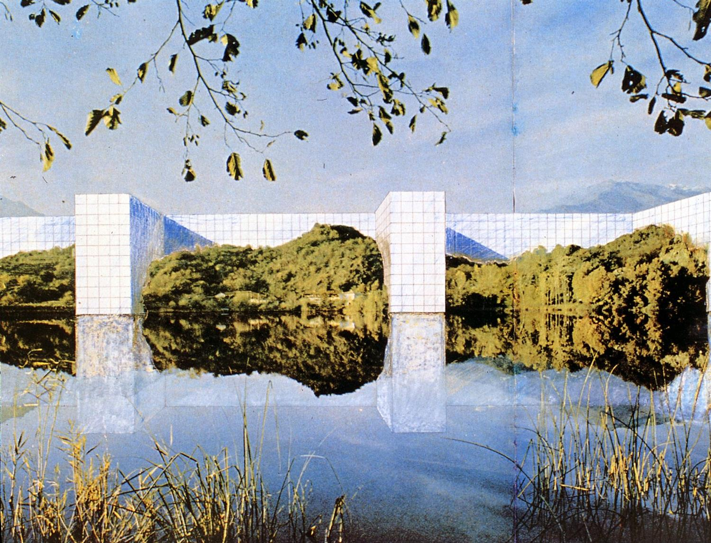

is an illustration crafted by Super studio in 1969 which suggests that by extending a single piece of architecture over the entire world they could establish a unified global order. This monument was strongly influenced by left-leaning, anti- consumerist and anti-capitalist ideas, which were common among radical designers in Italy during the 1960s-1970s. It was a reaction against consumer-focused models, depicting a bizarre and uncomfortable design which exposes the absurdity of “machines for living,” condemning how technology and modernized architecture belittles the beauty in landscape.